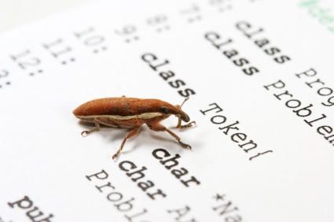

Migrating to Redmine
Harry Garrood
26 June 2012
What is Redmine?
Why track bugs?

Bugs should never be forgotten about
Prioritisation
Version history
Support
Management
Comparison with old bug tracker
No integration with other tools
Subversion
Jenkins
Searching
Notifications
Release notes
Summary